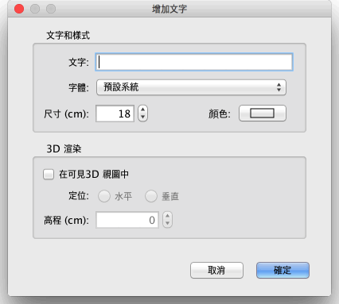

| 增加文字 | |||
在向家居模型中增加浮動文字前，請在功能表上選擇平面圖→增加文字或在工具列上選擇“增加文字”工具。
要在平面圖中的某一位置增加文字，請在該位置處按一下，便會出現如下圖所示的視窗。請在文字方塊內輸入要增加的文字。  一旦創建了一個文字，您可以更改它的大小、樣式與當中可用的功能表項目 平面圖→修改文字樣式 子功能表。 您也可以通過選擇更改其文字，其字體、 它的顏色和它的 3D 渲染 平面圖→修改文字 功能表項目。 選擇在 3D 視圖裡可見， 於修改窗格中的核取方塊中，能在 3D 視圖中顯示的文字，含水平或垂直方向。
若要結束添加文字，請選擇 平面圖→選擇 或選擇 選擇工具(或其他工具)。
在選擇 模型，你將旋轉 一其指標，或按兩下它，以顯示其修改窗格中的選定文字。 |


|